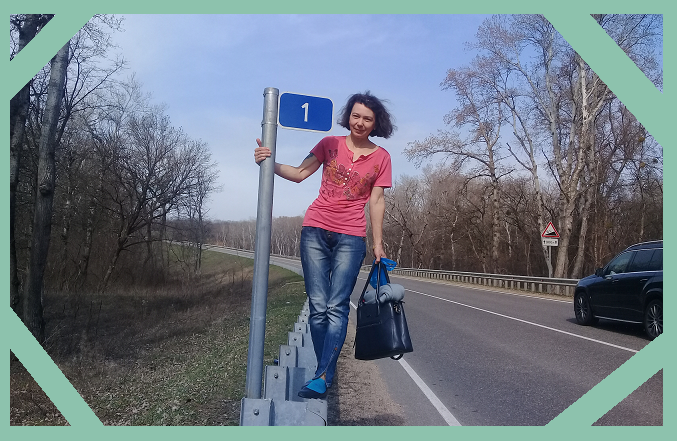

Мария Стрельцова
Как вы уже догадались - в чём я ни капли не сомневаюсь - меня зовут Мария. Где и когда я родилась - думаю, неважно, а живу последние 20 лет в славном городе Усть-Лабинске, расположенном недалеко от места впадения не менее славной реки Лабы в величественную Кубань.
Давайте познакомимся поближе.